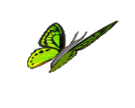

According to Wikipedia:
A butterfly is an insect of the order Lepidoptera, it belongs to either the Hesperioidea (the skippers) or Papilionoidea (all other butterflies) Superfamilies. Some authors have also suggested the inclusion of the superfamily Hedyloidea, the American butterfly moths. They are notable for their unusual life cycle with a larval caterpillar stage, an inactive pupal stage and a spectacular metamorphosis into a familiar and colourful winged adult form. The diverse patterns formed by their brightly coloured wings and their erratic-yet-graceful flight have made butterfly watching a popular hobby.